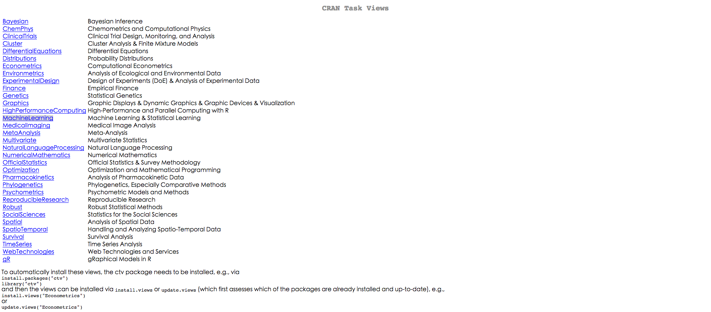

Wush Wu
- Taiwan R User Group 共同創辦人
- 以下R 套件的貢獻者:
- FeatureHashing
- digest
- rcppcnpy
- knitr
- 臺大電機所博士生

Wush Wu
>"hello world"後按下Enter，檢查螢幕輸出（記得加上引號）1 + 1後按下Enter，檢查螢幕輸出，注意有無引號1 +後按下Enter，檢查螢幕輸出，注意最左下角的開頭變成+>開頭he之後按下Enterhe之後按下tabhe隻後按下Ctrl + Enter後，觀察命令列區he後的位置，確認游標閃爍的位置在he之後，按下tab
install.views("topic-name")
install.packages("pkg-name", repos = "來源")
RSQLite、ggplot2、magrittr和dplyr套件"1;2;3;"
## [1] "1;2;3;"
1;2;3;
## [1] 1
## [1] 2
## [1] 3
;或斷行(輸入Enter)作結尾'或雙引號"所包覆的敘述當成字串+#之後的程式碼會被當成註解
1;2;#3
## [1] 1
## [1] 2
1 + 1
## [1] 2
1 + 2 - 1
## [1] 2
(1 + 1) * 2
## [1] 4
2.5e3
## [1] 2500
e的數值代表要再乘以10的冪次方<-或=One
## Error in eval(expr, envir, enclos): 找不到物件 'One'
One <- 1
One
## [1] 1
Two = "2"
Two
## [1] "2"
\[\Downarrow\]
1:3
## [1] 1 2 3
c(1, 2, 3) + 1
## [1] 2 3 4
1:3 * 2
## [1] 2 4 6
c和建立向量:建立序列c，按下tab
c開頭的函數?c後按下Enterc後按下Enter......之後的參數+、-、*或/來回答：# ubike在捷運市政府站(3號出口)站點於2015-03-01的每小時降雨量
rainfall1 <- c(0.157,0.432,0.702,0.947,1.129,1.224,1.241,
1.218,1.201,1.207,1.225,1.233,1.227,1.218,1.22,1.233,
1.244,1.246,1.242,1.242,1.249,1.257,1.258,1.252)
# ubike在大鵬華城站點 於2015-03-01的每小時降雨量
rainfall2 <- c(0.041,0.315,0.586,0.83,1.013,1.108,1.124,
1.102,1.085,1.091,1.108,1.116,1.11,1.102,1.104,1.116,
1.127,1.129,1.126,1.125,1.132,1.14,1.141,1.136)
rainfall1每小時的降雨量和rainfall2的差距1L1.599L;99.5
## [1] 99
## [1] 99.5
Sys.time()
## [1] "2015-04-11 10:17:41 CST"
ISOdatetime(year = 1970, month = 1, day = 1,
hour = 0, min = 0, sec = 0)
## [1] "1970-01-01 CST"
"1"factor(1)c("011", "012");factor(c("信義區","大安區","信義區"))
## [1] "011" "012"
## [1] 信義區 大安區 信義區
## Levels: 大安區 信義區
x <- 1:3
class(x)
## [1] "integer"
x <- factor(c("1", "2", "3"))
class(x)
## [1] "factor"
x <- c(1, 2, 3, 2, 3, 2, 1)
as.character(x) # 字串
## [1] "1" "2" "3" "2" "3" "2" "1"
factor(x) # 類別
## [1] 1 2 3 2 3 2 1
## Levels: 1 2 3
x <- c(75, 81, 82, 76, 91, 92)
cut(x, breaks = c(70, 80, 90, 100))
## [1] (70,80] (80,90] (80,90] (70,80]
## [5] (90,100] (90,100]
## Levels: (70,80] (80,90] (90,100]
x <- c("1", "2", "3", "2", "a")
as.numeric(x)
## Warning: 強制變更過程中產生了 NA
## [1] 1 2 3 2 NA
NA代表Not available，代表著missing value
百萬元
5,023,763
5,614,679
6,205,338
gdp <- c("5,023,763", "5,614,679", "6,205,338")
as.numeric(gsub(",", "", gdp))
## [1] 5023763 5614679 6205338
list是R 物件的向量data.frame是長度相同的R 物件的向量data.frame是最常使用的物件data.frame的概念在各種資料處理的領域非常常見
data.frame的型式data.frame的功能data.frame開始的各種進階處理功能
| date | factor | tot | integer | min.bemp | integer |
| hour | integer | avg.sbi | numeric | std.bemp | numeric |
| sno | integer | max.sbi | integer | temp | numeric |
| sarea | factor | min.sbi | integer | humidity | numeric |
| sna | factor | std.sbi | numeric | pressure | numeric |
| lat | numeric | avg.bemp | numeric | max.anemo | numeric |
| lng | numeric | max.bemp | integer | rainfall | numeric |
## Warning in file(file, "rt"):
## 無法開啟檔案 'ubike-cname.csv' ：No
## such file or directory
## Error in file(file, "rt"): 無法開啟連結
## Error in eval(expr, envir, enclos): 找不到物件 'ubike.cname.raw'
## Error in eval(expr, envir, enclos): 找不到物件 'ubike.cname'
## Error in split(ubike.ctype, rep(1:3, each = 7)): 找不到物件 'ubike.ctype'
print.factorprint.data.frameprint.defaulthttp://data.dsp.im/dataset/youbike-and-weather-data-20150331抓取ubike和天氣的資料# path <- "data/ubikeweatherbig5.csv"
path <- "data/ubikeweatherutf8.csv"
# readLines(path, n = 5)
ubike <- read.table(path, sep = ",", header = TRUE, nrows = 100)
# system.time(ubike <- read.table(path, sep = ",", header = TRUE))
# object.size(ubike) # 約86MB
path <- "wrong_path"
power <- read.table(file = path, header = TRUE, sep = ",")
## Warning in file(file, "rt"):
## 無法開啟檔案 'wrong_path' ：No such
## file or directory
## Error in file(file, "rt"): 無法開啟連結
getwd了解R 當下的路徑位置path <- "data/ubikeweatherbig5.csv"
power <- read.table(file = path, header = TRUE, sep = "1")
## Error in read.table(file = path, header = TRUE, sep = "1"): more columns than column names
path <- "data/ubikeweatherbig5.csv"
power <- read.table(file = path, header = TRUE, sep = ",", nrows = 10)
## Error in type.convert(data[[i]], as.is = as.is[i], dec = dec, numerals = numerals, : 無效的多位元組字串於 '<ab>H<b8>q<b0><cf>'
UTF-8和BIG-5file函數指定編碼readLines、iconv和write來製造符合系統編碼的檔案data.frameclass(ubike)
## [1] "data.frame"
colnames(ubike) <-
c("日期", "時間", "場站代號", "場站區域", "場站名稱",
"緯度", "經度", "總停車格", "平均車輛數", "最大車輛數",
"最小車輛數", "車輛數標準差", "平均空位數", "最大空位數",
"最小空位數", "空位數標準差", "平均氣溫", "溼度",
"氣壓", "最大風速", "降雨量")
library(RSQLite)
## Loading required package: DBI
db.path <- "ubike.db"
drv <- dbDriver("SQLite")
db <- dbConnect(drv, db.path)
dbWriteTable(db, "ubike", head(ubike))
dbListTables(db)
dbReadTable(db, "ubike")
dbDisconnect(db)
RMySQL, RPostgreSQL, ROracle, RJDBC, RODBCrmongodb, rredisXML套件和XPathRJSONIO套件> < >= <= == !=1 > 2;1 <= 2
## [1] FALSE
## [1] TRUE
"A" == "A";"A" != "A"
## [1] TRUE
## [1] FALSE
x <- 1:5; x[2:3]
## [1] 2 3
x <- 1:5; x > 3; x[x > 3]
## [1] FALSE FALSE FALSE TRUE TRUE
## [1] 4 5
&
布林運算結果1 & 布林運算結果1|
布林運算結果1 | 布林運算結果1# 社會服務業自民國87至民國91年的年度用電量（度）
power1 <- c(6097059332, 6425887925, 6982579022, 7323992602.53436, 7954239517)
# 製造業自民國87至民國91年的年度用電量（度）
power2 <- c(59090445718, 61981666330, 67378329131, 66127460204.6482, 69696372914.6949)
運用index從power1中選取第88年和第90年的年度用電量。結果應該為：
## [1] 6425887925 7323992603
運用布林運算自power2中選出，製造業超過社會服務業9.5倍的用電年度的用電量。結果應該為：
## [1] 59090445718 61981666330 67378329131
ubike[2, 3]
## [1] 2
## 日期 時間 場站代號
## 1 2014-12-08 15 1
## 2 2014-12-08 15 2
## 3 2014-12-08 15 3
## 4 2014-12-08 15 4
## 5 2014-12-08 15 5
## 6 2014-12-08 15 6
head(ubike[["日期"]])
## [1] 2014-12-08 2014-12-08 2014-12-08
## [4] 2014-12-08 2014-12-08 2014-12-08
## 108 Levels: 2014-12-08 ... 2015-03-31
# head(ubike$日期)
head(ubike[,1])
## [1] 2014-12-08 2014-12-08 2014-12-08
## [4] 2014-12-08 2014-12-08 2014-12-08
## 108 Levels: 2014-12-08 ... 2015-03-31
ubike選取場站代號unique1比較whichans1 <- ubike[["場站代號"]]
ans2 <- unique(ans1)
ans3 <- ans1 == 1
ans4 <- which(ans3)
ans5 <- ubike[ans3,]
ans5 <- ubike[ans4,]
ubike選取場站代號1099比較ubike選取2.的列之後，用1.的方法選取平均氣溫
3.1 可利用座標的概同時選取出結果ubike[ubike[["場站代號"]] == 1 & ubike[["日期"]] == "2015-03-01",]
x1 <- ubike[["場站代號"]] == 1
x2 <- ubike[["日期"]] == "2015-03-01"
x3 <- x1 & x2
x4 <- ubike[x3,]
magrittr部份解決了這個問題ans1 <- ubike[["場站代號"]]
ans1.1 <- unique(ans1)
unique(ubike[["場站代號"]])
library(magrittr)
ubike[["場站代號"]] %>%
unique
data.frame做設計（名稱中的d）data.frame或資料庫中的表格）vignettefilterselectmutatearrangegroup_by + summarisemean、sd、mediantabletable + sortmean的用法?meanexample(mean)mena(後按下tabsd的用法?sd嘗試自學標準差的用法場站代號為1和日期為"2015-03-01"的資料捷運市政府站(3號出口)在"2015-03-01"的降雨量的標準差group_by
lengthmean、sd、medianlength(unique)paste(unique, collapse = ",")group_by(ubike, 日期) %>%
summarise(平均降雨量 = mean(降雨量))
group_by(ubike, 場站區域) %>%
summarise(站點數 =
length(unique(場站代號))) %>%
arrange(站點數)
group_by(ubike, 場站區域) %>%
summarise(站點代號清單 =
paste(unique(場站代號),
collapse = ","))
table列出所有的場站名稱出現的次數ftable：質化 v.s. 質化?ftable
example(ftable)
ftable> ## Start with a contingency table.
ftable> ftable(Titanic, row.vars = 1:3)
Survived No Yes
Class Sex Age
1st Male Child 0 5
Adult 118 57
Female Child 0 1
Adult 4 140
信義區且日期為"2015-03-01"的列平均車輛數與總停車格平均車輛數"是否超過總停車格的一半
空位較多時間時間和空位較多的交互關係x1 <- ubike[["場站區域"]] == "信義區"
x2 <- ubike[["日期"]] == "2015-03-01"
x3 <- ubike[x1 & x2, "平均車輛數"]
x4 <- ubike[x1 & x2, "總停車格"]
x5 <- x3 < x4 / 2
x6 <- ubike[x1 & x2, "時間"]
ftable(x6, x5)
x1 <- filter(ubike, 場站區域 == "信義區", 日期 == "2015-03-01")
x2 <- mutate(x1, 空位較多 = 平均車輛數 < 總停車格 / 2)
ftable(x2[["時間"]], x2[["空位較多"]])
tbl <- filter(ubike, 場站區域 == "信義區", 日期 == "2015-03-01") %>%
mutate(空位較多 = 平均車輛數 < 總停車格 / 2)
ftable(tbl[["時間"]], tbl[["空位較多"]])
data.framedata.frame送至ggplot函數aes定位欄位和對應的圖的元素
# grepl("要搜尋的字串", x, fixed = TRUE)
x1.1 <- grepl("2015-02", ubike[["日期"]], fixed = TRUE)
x1.2 <- ubike[["場站區域"]] == "信義區"
x2 <- group_by(ubike[x1.1,], 場站名稱)
x3 <- summarise(x2, 平均降雨量 = mean(降雨量))
x3 <- filter(ubike, grepl("2015-02", 日期, fixed = TRUE),
場站區域 == "信義區") %>%
group_by(場站名稱) %>% summarise(平均降雨量=mean(降雨量))
thm <- theme(text=element_text(size=18))
las2 <- theme(axis.text.x = element_text(angle = 90, hjust = 1))
ggplot(x3) +
geom_bar(aes(x = 場站名稱, y = 平均降雨量), stat = "identity") +
thm + las2
# grepl("要搜尋的字串", x, fixed = TRUE)
x1.1 <- grepl("2015-02", ubike[["日期"]], fixed = TRUE)
x1.2 <- ubike[["場站區域"]] == "信義區"
x2 <- group_by(ubike[x1.1,], 場站名稱)
x3 <- summarise(x2, 平均降雨量 = mean(降雨量), 平均溼度 = mean(溼度))
x3 <- filter(ubike, grepl("2015-02", 日期, fixed = TRUE),
場站區域 == "信義區") %>%
group_by(場站名稱) %>% summarise(平均降雨量 = mean(降雨量), 平均溼度 = mean(溼度))
ggplot(x3) +
geom_point(aes(x = 平均溼度, y = 平均降雨量)) +
thm + las2
ggplot(x3) +
geom_point(aes(x = 平均溼度, y = 平均降雨量, colour = 場站名稱)) +
thm + las2
grid套件ggthemes等套件
savePlotbmp、png、jpeg或tiffwrite.csvxtable套件sos套件，請見Demo